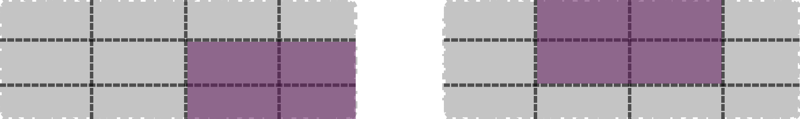
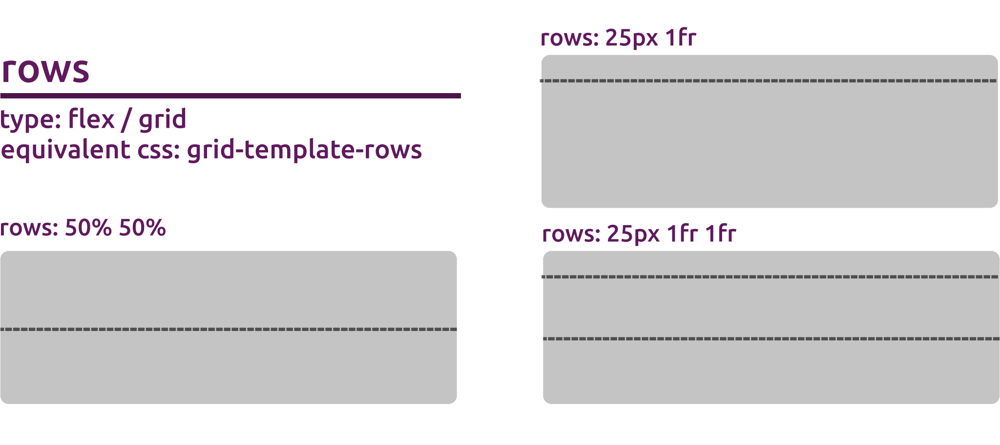

The imola grid functions family focuses on providing support for the CSS Grid standard. In imola you can find 2 functions that allow you to create a new grid component. gridPanel() and gridPage().
Similar to what happens in the flex family, gridPage() is simply a wrapper for gridPanel() that allows you to create a page UI element without the need of using any of the built in shiny functions.
Grid is a powerful spec that, when combined with other parts of CSS such as flexbox, can help you create layouts that were previously impossible to build in CSS.
If you’re interested in more information about the full array of options in the CSS grid standard from the CSS side, I recommend this article to get you started.
Available arguments
In imola, the main functions used to generate flex containers are gridPanel() and gridPage(). There’s a lot of arguments going on here, so lets go over what each option can do:
gridPanel(
...,
template = NULL,
areas = NULL,
rows = NULL,
columns = NULL,
gap = NULL,
align_items = "stretch",
justify_items = "stretch",
auto_fill = TRUE,
breakpoint_system = getBreakpointSystem(),
id = generateID()
)
gridPage(
..., # Any argument that can be passed to gridPanel()
title = NULL,
fill_page = TRUE,
dependency = bootstrapLib()
)Concepts and Terminology
CSS Grid Layout introduces a two-dimensional grid system to CSS. Grids can be used to lay out major page areas or small user interface elements.
A grid can be compared to a set of horizontal and vertical lines defining columns and rows. Elements can be placed onto the grid within these column and row lines. You can think of it as a table where each cell can be identified via its row and column position, with elements being able to span any adjacent number of cells.
Grid Line
The dividing lines that make up the structure of the grid. They can be either vertical (“column grid lines”) or horizontal (“row grid lines”) and reside on either side of a row or column. 
Grid Track
The space between two adjacent grid lines. You can think of them as the columns or rows of the grid.
The size of these tracks can be either fixed (using a fixed size unit like pixels) or flexible (using percentages or the new fr unit). 
Grid Cell
The space between two adjacent row and two adjacent column grid lines. It’s a single “unit” of the grid. 
Grid Area
The total space surrounded by four grid lines. A grid area may be composed of any number of grid cells, and depending on how the grid is configured, identified by its bonding lines indexes or its name. For a grid area to be valid, its cells MUST create a rectangular area. Single cell areas are also valid.

Item placement
You can place items into a precise location on the grid using line numbers, names or by targeting an area of the grid. Grid also contains an algorithm to control the placement of items not given an explicit position on the grid. 
NOTE: By default named grid lines are not officially supported with imola.
However, if you are interested in using named lines, you could use the css string syntax for the rows and columns and manually add the child elements css for grid-column-start, grid-column-end, grid-row-start, grid-row-end, instead of using named arguments with areas.
The same applies to positioning child elements using cell indexes. While there are no specific argument to add row and column indexes to a child element, you can always add these manually via css or the styles argument of HTML tag functions in R.

…
Tag attributes (named arguments) and children (unnamed arguments). A named argument with an NA value is rendered as a boolean attribute.
Named arguments can be used to provide additional values to the container of the grid.
Visit https://www.w3schools.com/tags/ref_attributes.asp for a list of valid HTML attributes.
Children may include any combination of:
- Other tags objects
- [HTML()] strings
- [htmlDependency()]s
- Single-element atomic vectors
... main purpose is to add content to your panel, but it can also be used to tweak your HTML generation, allowing a very similar behavior to traditional HTML tag functions provided by htmltools, and letting you customize your HTML tag. By default using these functions behaves similar to using div(), with additional styles being added to meet our layout expectations.
If you defined named areas in the areas argument, you can also pass named arguments here using those area names to specify which area that child element will be added into.
template
The name of the template to use as a base for the grid, or the resulting value from using gridTemplate() to generate a template object.
When passing a string as a value if the template is not registered you will get a error message. Valid template strings are either built in or created using registerTemplate().
A quick way to see all registered templates (for flex functions) is to use names(listTemplates("flex")):
# names(listTemplates("grid"))
# Default built in grid templates
[1] "grail-left-sidebar" "grail-right-sidebar" "header-left-sidebar" "header-sidebar-right" "holy-grail"
[6] "sidebar-left" "sidebar-right"Templates that you register also become valid values for the template argument, and will also be displayed when listing available template names:
registerTemplate("grid", "mycustomtemplate",
areas = c(
"area-1",
"area-2",
"area-3"
)
)
# names(listTemplates("grid"))
[1] "grail-left-sidebar" "grail-right-sidebar" "header-left-sidebar" "header-sidebar-right" "holy-grail"
[6] "sidebar-left" "sidebar-right" "mycustomtemplate"Any listed template name can then be used as a value, regardless if built in or custom:
gridPanel(template = "grail-left-sidebar")
Visit https://sparktuga.shinyapps.io/imolatemplates/ for a full list of imola’s built in templates.
Note: See listTemplates() and registerTemplate() documentation for more information on those functions, or vignette("imola-templates") for a full breakdown regarding templates in imola.
areas
Defines a grid template by referencing the names of the grid areas which are specified with the css grid-area property (in imola this is done with named arguments as part of ...).
Repeating the name of a grid area causes the content to span those cells. For a grid area to be valid, its cells MUST create a rectangular area (Single cell areas are also valid). A period signifies an empty cell. The syntax itself provides a visualization of the structure of the grid.
gridPanel(
areas = list(
c("header", "header", "header", "header"),
c("main", "main", ".", "sidebar"),
c("footer", "footer", "footer", "footer")
),
header = div(class = ".item-a "),
main = div(class = ".item-b "),
sidebar = div(class = ".item-c "),
footer = div(class = ".item-d ")
)As with other arguments, a string variant is also available if you prefer to stay closer to the css syntax.
gridPanel(
areas = c(
"header header header header",
"main main . sidebar",
"footer footer footer footer"
),
header = div(class = ".item-a "),
main = div(class = ".item-b "),
sidebar = div(class = ".item-c "),
footer = div(class = ".item-d ")
)In either case, the size of the grid will be determined by the given value for areas. The number of columns will be the length of each value (in the string syntax, this will be the number of names separated by spaces), and the number of rows the number of values given. This means the above example will generate a grid with 4 columns and 3 rows.
It is also important to note that for the areas argument to be valid, the length of each value given should be equal (number of elements in each vector for the R syntax, number of names between each space on the string syntax).
Both of the above example will generate the following css rules:
.item-a {
grid-area: header;
}
.item-b {
grid-area: main;
}
.item-c {
grid-area: sidebar;
}
.item-d {
grid-area: footer;
}
.panel {
grid-template-areas:
"header header header header"
"main main . sidebar"
"footer footer footer footer";
}
When used together with rows and columns, areas provides the names of the areas for grid items, while rows and columns provide the sizes. If either rows and columns are not provided, sizes will be automatically defined based on the dimensions of the areas argument.
rows
Defines the rows of the grid with a space-separated list of values. The values represent the track size, and the space between them represents the grid line.
In imola, you can use either the css notation (a string with values separated by a space) or a vector notation (a vector where each element is a value). Both notations are valid, but if you plan on using specific css functions such as repeat(), the single string css notation is recommended.
# both notations produce the same results
# css notation
rows = "50px 50px 2fr 1fr"
# R vector notation
rows = c("50px", "50px", "2fr", "1fr")
columns
Defines the columns of the grid with a space-separated list of values. The values represent the track size, and the space between them represents the grid line.
In imola, you can use either the css notation (a string with values separated by a space) or a vector notation (a vector where each element is a value). Both notations are valid, but if you plan on using specific css functions such as repeat(), the single string css notation is recommended.
# both notations produce the same results
# css notation
columns = "50px 50px 2fr 1fr"
# R vector notation
columns = c("50px", "50px", "2fr", "1fr")
gap
Controls the space between items. It applies that spacing only between items not on the outer edges. The behavior could be thought of as a minimum gutter, as if the gutter is bigger somehow (because of something like justify-content: space-between;) then the gap will only take effect if that space would end up smaller.
The gap argument controls both the row gap and the column gap at the same time, making its css equivalent gap, row-gap and column-gap. If a single value is given it is used for both row and column gap, but a pair of values separated by a space can also be used for controlling these independently.
Accepts a valid value in css values ("0", "10px", "20%", "0.5rem"), or a pair of values separated by space ("10px 20px", "5% 10%", "10px 5%").

By default the value 0 is used. Supports named list for breakpoints. See vignette("imola-breakpoints") for more on breakpoints.
align_items
Aligns grid items along the inline (row) axis (as opposed to justify_items which aligns along the block (column) axis). This value applies to all grid items inside the container.
Possible values for this property include: - stretch – fills the whole height of the cell (this is the default) - start – aligns items to be flush with the start edge of their cell - end – aligns items to be flush with the end edge of their cell - center – aligns items in the center of their cell

Note: Together, align_items and justify_items completely cover the place-items css property, making direct coverage from imola for place-items redundant and therefore not provided in the grid functions.
justify_items
Aligns grid items along the inline (row) axis (as opposed to align_items which aligns along the inline (row) axis). This value applies to all grid items inside the container.
Possible values for this property include: - stretch – fills the whole width of the cell (this is the default) - start – aligns items to be flush with the start edge of their cell - end – aligns items to be flush with the end edge of their cell - center – aligns items in the center of their cell

Note: Together, align_items and justify_items completely cover the place-items css property, making direct coverage from imola for place-items redundant and therefore not provided in the grid functions.
auto_fill
Flag to tell the grid container should automatically. By default if using grid specific fractionary units (fr) if can happen that sometimes the grid does not behave as expected when it comes to its size.
When set to true this will force the panel to be stretched to fit the size of the parent element where it is being added. Defaults to TRUE. If content is being stretched in unexpected ways, set it to FALSE to allow the content (or rows and columns defined sizes) to control the grid size instead.
breakpoint_system
Optional Media breakpoints to use. Will default to the current active breakpoint system.
For other arguments that support breakpoints, instead of simply passing them a value, you can also provide a named list of valid values.
The names used in that list can be any of the registered breakpoints available in the provided breakpoint_system argument (defaults to getBreakpointSystem()), as well as the reserved keyword default.
See vignette("imola-breakpoints") for more details on breakpoints.
id
The panel ID. A randomly generated one is used by default. Providing your own ID will allow you to target the generated HTML tag via CSS or JavaScript if needed.
General rules regarding HTML Ids apply, including the fact that duplicated Ids are not allowed.
For a full list of details on the HTML ID attribute, check https://www.w3schools.com/html/html_id.asp
title
The browser window title (defaults to the host URL of the page). This is the name that appears on the browser tab.
fill_page
Flag to tell the page if it should adjust the page to adjust and fill the browser window size.
When set to true this will force the grid to be at least as tall as the available browser window. This makes the container stretch if the content is smaller, while still allowing it to grow beyond the height of the viewport if necessary.
dependency
The set of web dependencies. This value can be a htmlDependency, for example the shiny bootstrap one (the default) or a [tagList] with different dependencies. Useful if you are using a different UI framework of package with its own required dependencies (or that requires you to suppress bootstrap dependencies)